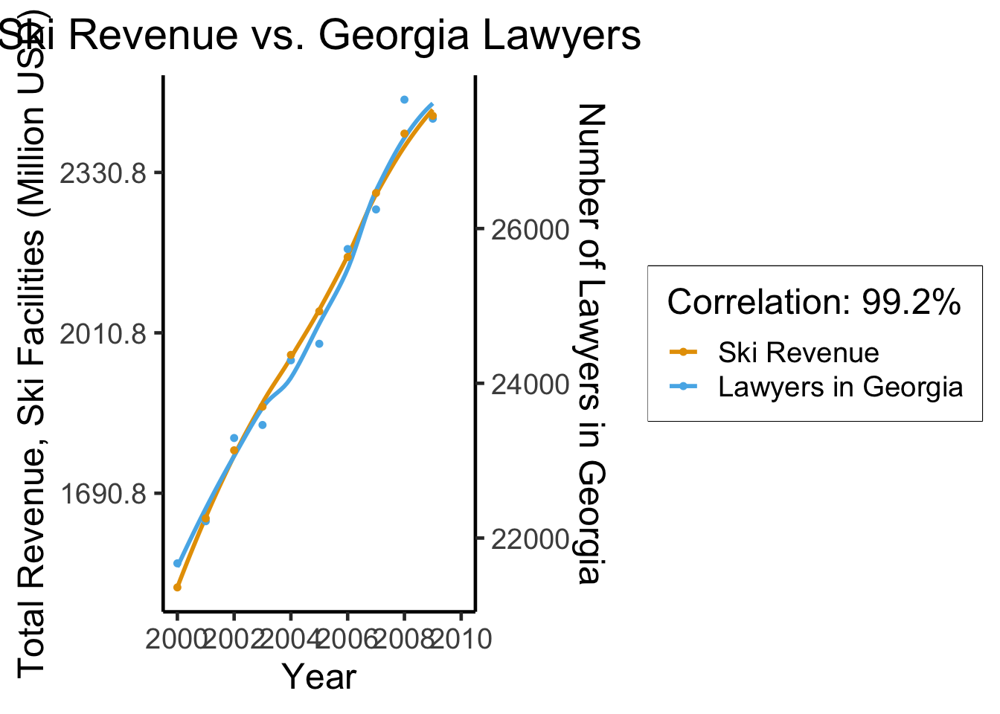

.jpg){kind=link}
source("../_globals.r")
library(dplyr)
Attaching package: 'dplyr'The following objects are masked from 'package:stats':
filter, lagThe following objects are masked from 'package:base':
intersect, setdiff, setequal, unionlibrary(ggplot2)
ga_lawyers <- c(21362, 22254, 23134, 23698, 24367, 24930, 25632, 26459, 27227, 27457)
ski_df <- tibble::tribble(
~year, ~varname, ~value,
2000, "ski_revenue", 1551,
2001, "ski_revenue", 1635,
2002, "ski_revenue", 1801,
2003, "ski_revenue", 1827,
2004, "ski_revenue", 1956,
2005, "ski_revenue", 1989,
2006, "ski_revenue", 2178,
2007, "ski_revenue", 2257,
2008, "ski_revenue", 2476,
2009, "ski_revenue", 2438,
)
ski_mean <- mean(ski_df$value)
ski_sd <- sd(ski_df$value)
ski_df <- ski_df %>% mutate(val_scaled = 12*value, val_norm = (value - ski_mean)/ski_sd)
law_df <- tibble::tibble(year=2000:2009, varname="ga_lawyers", value=ga_lawyers)
law_mean <- mean(law_df$value)
law_sd <- sd(law_df$value)
law_df <- law_df %>% mutate(val_norm = (value - law_mean)/law_sd)
spur_df <- dplyr::bind_rows(ski_df, law_df)
ggplot(spur_df, aes(x=year, y=val_norm, color=factor(varname, labels = c("Ski Revenue","Lawyers in Georgia")))) +
stat_smooth(method="loess", se=FALSE) +
geom_point(size=g_pointsize/4) +
labs(
fill="",
title="Ski Revenue vs. Georgia Lawyers",
x="Year",
color="Correlation: 99.2%",
linetype=NULL
) +
dsan_theme("custom", 18) +
scale_x_continuous(
breaks=seq(from=2000, to=2014, by=2)
) +
#scale_y_continuous(
# name="Total Revenue, Ski Facilities (Million USD)",
# sec.axis = sec_axis(~ . * law_sd + law_mean, name = "Number of Lawyers in Georgia")
#) +
scale_y_continuous(breaks = -1:1,
labels = ~ . * round(ski_sd,1) + round(ski_mean,1),
name="Total Revenue, Ski Facilities (Million USD)",
sec.axis = sec_axis(~ . * law_sd + law_mean, name = "Number of Lawyers in Georgia")) +
expand_limits(x=2010) +
#geom_hline(aes(yintercept=x, color="Mean Values"), as.data.frame(list(x=0)), linewidth=0.75, alpha=1.0, show.legend = TRUE) +
scale_color_manual(
breaks=c('Ski Revenue', 'Lawyers in Georgia'),
values=c('Ski Revenue'=cbPalette[1], 'Lawyers in Georgia'=cbPalette[2]))`geom_smooth()` using formula = 'y ~ x'